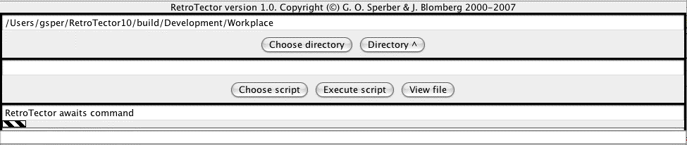

|
|
RetroTector
|
|
The RetroTector window
The RetroTector window, which appears on successful startup, has a
platform-dependent look, but should be something like this:

It has the following components (in top-bottom
left-right, order):
- The Working directory field. To begin with, it is
set according to the 'WorkingDirectory' parameter in Configuration.txt. It specifies where
RetroTector is allowed to do work at the moment. It may be changed using
- The Choose directory button. Clicking it produces a file dialog window where
you may search out and select any directory.
- The Directory^ button. Clicking it will take you one
step up in the working directory hierarchy.
- The Script file field. This should contain, if
anything, the file path of an Executor script in the
Working directory. It may be changed with the
- Choose script button. When it is clicked, any text
file (not necessarily a script) within the Working directory may be
choosen through a file dialog. It
should not allow you to go outside the Working directory,
though this does not seem to work in all implementations.
- The Execute script button. When it is clicked, the
file whose path is in the Script file field (hopefully a script) is
executed.
- The View file button. When it is clicked, a window
appears where you may inspect the file whose path is in the Script file
field. You may also do some rudimentary editing (details are
implementation-dependent, but the usual Paste, Copy and Cut
key assignments should work) and also save the result with the Save
button. You are not asked if you really want to save!
- The Current executor field. It shows the name of the
currently running Executor, preceded by
'SweepScripts>' if it running under the auspices of SweepScripts.
- The Progress indicator. This little field should
move a couple of times per second when lengthy work is in progress, but
the programmer has been known to forget to provide for this.
- The Information field. This displays auxiliary
information from the current Executor.
There are two menus belonging to the RetroTector
window.
Their location and appearance is platform-dependent.
- The 'Control' menu. It has four items:
- 'Clear error messages'. See below.
- 'Abort' will terminate the current task within a
reasonable time (though this is coupled to the movements of the
Progress indicator and similarly dependent on the programmer).
- 'Stop SweepScripts' is enabled only when SweepScripts is running. It will
'soft-stop'
it, so that a new call to SweepScripts may continue the work done.
- 'Quit' will terminate RetroTector, without asking
permission.
- The 'Execute' menu. This contains the names of all
the Executors found in Retrotector.jar
and the 'plugins' directory, in an order
partly or wholly determined by the 'Executormenu' parameter in Configuration.txt. Choosing one of them
will start that Executor interactively, unless an Executor is already
running, in which case the 'Execute' menu is not in operation.
At the bottom of the RetroTector window there are two
scrolling panels (invisible if empty). The upper one displays Warning
(on blue) and Notice (on green) messages, the lower Error (on
red) messages.
The messages
are also written to the error log file.
NB that the error log file will be properly
closed only if you
terminate RetroTector with the Quit menu command (see above), not
through
closing the text window or something.
To remove the messages from the window, use the command
'Clear error
messages' in the Control menu.
|
|